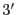

| Parameter | Mand | Type | Default | Constraints |
| prefix | yes | string | 1S001 | |
Detector and exposure identifier (eg. "S001") for the PN S001 exposure
to be processed.
|
| caldb | yes | string | | |
Directory containing all the ESAS specific calibration files
|
| region | yes | int | reg.txt | |
the selection expression for the desired region for the
generation of the model background spectrum. If no file with the input name
exists, or if the file is empty, then the default is to model the data from
the entire field of view. If a specific region is desired, the region
expression must be in detector coordinates. For example, a file containing
&&((DETX,DETY) IN circle(201,-219,3600)) would extract the central
 of the cluster Abell 1795. Note that the leading ``&&'' are
required as the selection expression is added to other constraints.
|
| mask | yes | int | | |
Flag to mask out point sources. 0 selects no masking
while 1 will cause pn-spectra to use the output filtered source
region file from cheese-bands.
|
| elow | yes | int | 2000 | |
Energy low limit (in eV) for the band. If
elow and ehigh are set to 0, the image processing will
be eliminated and only spectral files will be produced.
|
| ehigh | yes | int | 7200 | |
Energy high limit (in eV) for the band. If
elow and ehigh are set to 0, the image processing will
be eliminated and only spectral files will be produced.
|
| quad1-4 | yes | int | 1 | |
Flag to include individual quadrants.
|
| Parameter | Mand | Type | Default | Constraints |